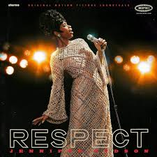
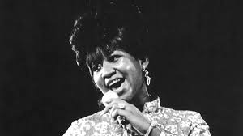

Respect
Song by Aretha Franklin
Original Video

What you want, baby, I got it
What you need, do you know I got it?
All I'm askin' is for a little respect when you get home
(Just a little bit) hey, baby
(Just a little bit) when you get home
(Just a little bit) mister
(Just a little bit)
I ain't gon' do you wrong while you're gone
Ain't gon' do you wrong 'cause I don't wanna
All I'm askin' is for a little respect when you come home
(Just a little bit) baby
(Just a little bit) when you get home
(Just a little bit) yeah
(Just a little bit)
I'm about to give you all of my money
And all I'm askin' in return, honey
Is to give me my propers when you get home
yeah, baby
(Just a, just a, just a, just a) when you get home
(Just a little bit) yeah
(Just a little bit)
Ooh, your kisses, sweeter than honey
And guess what? So is my money
All I want you to do for me, is give it to me when you get home
yeah, baby
(Re, re, re, re) whip it to me
(Respect, just a little bit) when you get home, now
(Just a little bit)
R-E-S-P-E-C-T
Find out what it means to me
R-E-S-P-E-C-T
Take care, TCB, oh
A little respect
(Sock it to me, sock it to me, sock it to me, sock it to me)
Whoa, babe
a little respect
(Just a little bit) I get tired
(Just a little bit) keep on tryin'
(Just a little bit) you're runnin' out of fools
(Just a little bit) and I ain't lyin'
(Just a little bit)
start when you come home
(Re, re, re, respect) or you might walk in
(Just a little bit) and find out I'm gone
(Just a little bit) I gotta have
